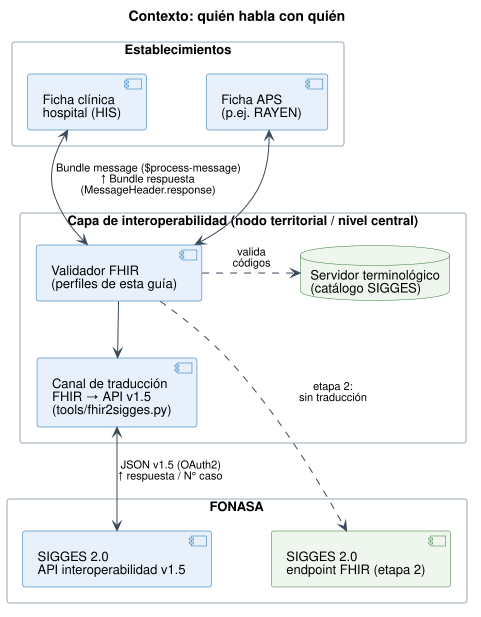

Notificación de Casos GES a SIGGES 2.0
0.4.0 - ci-build

Notificación de Casos GES a SIGGES 2.0
0.4.0 - ci-build

Notificación de Casos GES a SIGGES 2.0 - Local Development build (v0.4.0) built by the FHIR (HL7® FHIR® Standard) Build Tools. See the Directory of published versions
| Official URL: https://interoperabilidad.minsal.cl/fhir/ig/sigges/ImplementationGuide/hl7.fhir.cl.minsal.sigges | Version: 0.4.0 | |||
| Draft as of 2026-10-08 | Computable Name: NotificacionGESSIGGES | |||
Esta guía define cómo un establecimiento de salud notifica a SIGGES 2.0 (FONASA) los documentos del ciclo de un caso GES, usando mensajería FHIR R4. Reemplaza el enfoque de la versión 0.1.0, basada en QuestionnaireResponse, que emulaba las pantallas de notificación. En su lugar, esta versión modela el caso GES y los hechos clínicos que lo componen.

Bundle de tipo message. El documento se identifica en MessageHeader.eventCoding.Patient, PractitionerRole, Practitioner, Organization y el caso GES (EpisodeOfCare). Un implementador los construye una sola vez.ServiceRequestConditionProcedureTask| Principio | Cómo se aplica |
|---|---|
| Sencilla | 9 tipos de recurso, 5 extensiones y ningún recurso a medida. Los perfiles por documento son restricciones delgadas sobre recursos base, CL Core y NID. |
| Puede crecer | Hay tres ejes de crecimiento que no rompen nada: un documento nuevo, un dato nuevo por problema de salud (Observation) y un catálogo nuevo (CodeSystem versionado). Ver Modelo. |
| Semántica, no pantallas | confirmaSospechaDescarta pasa a ser Condition.verificationStatus, la causal es Task.statusReason y la prestación es Procedure.code. |
| El caso es el hilo | Todos los documentos apuntan al mismo EpisodeOfCare. Hoy SIGGES infiere el caso por RUN + problema de salud; con esta guía viaja explícito. |
| Transición sin fricción | FONASA no necesita cambiar su API el primer día. Un traductor de referencia convierte cada Bundle al JSON de la API v1.5, y ya está probado con los 15 mensajes de ejemplo. |
/consultar-sigges.Versión 0.4.0, borrador (draft) para revisión conjunta de MINSAL y FONASA. Depende de CL Core 1.9.4 y de NID 0.4.9, la base común de las guías del área de Historia Clínica Compartida. Los valores de confirmaSospechaDescarta, el formato DEIS y el URI nacional del RUN están marcados como pendientes de acuerdo. Los cambios respecto de la 0.2.0 están en el historial de cambios.
Autoría y créditos. Se basa en el trabajo previo de la guía Notificación de Caso GES v0.1.0 (César Galindo, HL7 Chile; María José Villarroel y Roxana Mercado, FONASA) y en el Documento de Interoperabilidad SIGGES 2.0 v1.5 (FONASA).